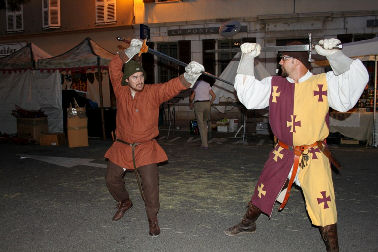
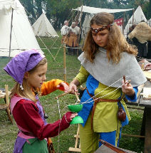
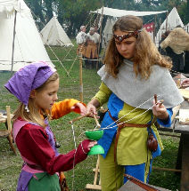

La mesnie vaque à ses occupations tout au long de la journée sur le campement, échangeant ça et là avec le public que nous pouvons inviter à participer. Ici pas de cours magistraux, l'objectif étant de faire découvrir certaines des activités qui rythment la vie de plusieurs familles :
L'artisanat : de la fabrication de parchemins, à la création d’équipements en cuir et côtes de mailles pour équiper nos chevaliers
Les jeux : échasses, poupée, arbalète en bois ou simple ruban, ici pas besoin d'écran ou de plastique pour s'amuser
Arts de la table
Du ragout de porc l'hydromel aux chaussons de fruits d'automne, Dame Margot ne manque pas
d'ingéniosité pour nous régaler, en utilisant les recettes et équipements d'autrefois.


Tissage et broderie
La Bougonne vous ravira par la précision de ses broderies et son tissage à la lucette. Perrette vous initiera au métier à
cartes... Si vous avez patience et habilité, vous participerez à la création des galons qui ornent nos vêtements.


Escrime
L'escrime au moyen-âge est un art complexe qui demande un long apprentissage. Childéric présente l'évolution des arts de la guerre et met bien entendu les armes entre les mains des novices pour leur inculquer les fondamentaux du maniement de la dague et de l'épée.




Art de la forge
Messire l'Ecarlate à ses heures perdues mets ses talents de forgeron au service de la Mesnie. Frappant et martelant, il crée les nouveaux équipements de cuisine réclamés par ces Dames.


Calligraphie
Calames ou plumes d’oie, quels drôles d’instruments ? Quant aux lettres, n’en parlons pas, un vrai cauchemar… Toutes plus complexes les unes que les autres. Ce n’est pas pour rien que la calligraphie est un art…
Mais pas besoin de prononcer vos vœux de moine copiste, sous les conseils de notre maître Calligraphe et avec un peu de patience, vous pourrez sur un parchemin, tracer votre prénom ou peut être un petit poème, à conserver en souvenir de votre séjour dans notre mesnie.

 
 
Jeux
La présence d'enfants sur le camp invite à jouer.
Mais si la poupée médiévale ou les quilles vous paraissent trop enfantines, seriez-vous capable de trouver l'équilibre sur nos échasses ou tenter de défier nos champions aux jeux de stratégie ?


Lessive à la cendre
Travail du cuir
Perrette vous livrera tous les secrets de la lessive à la cendre : le linge de table de la Mesnie et la chainse de nos combattants retrouveront sous vos yeux une
apparence déja plus satisfaisante...

Suivant les besoins de la Mesnie, un simple morceau de cuir devient une ceinture, une besase ou un fourreau, entre les mains expertes de Maitre Childéric de Vaugrenier.

Nous vivons et mangeons en famille sur le camp qui devient le temps d'un week-end, le mode de vie que nous avons choisi. L'on s'adonne aux activités qui rythmaient la vie de différentes classes sociales médiévales.
Au travers de nos costumes, de l'artisanat et des arts de la table, nous faisons revivre la fin du XIIème siècle et le début du XIIIème.
Mais nous présentons aussi les évolutions des costumes, du matériel millitaire, de la société sur tout le moyen-âge et la Renaissance.